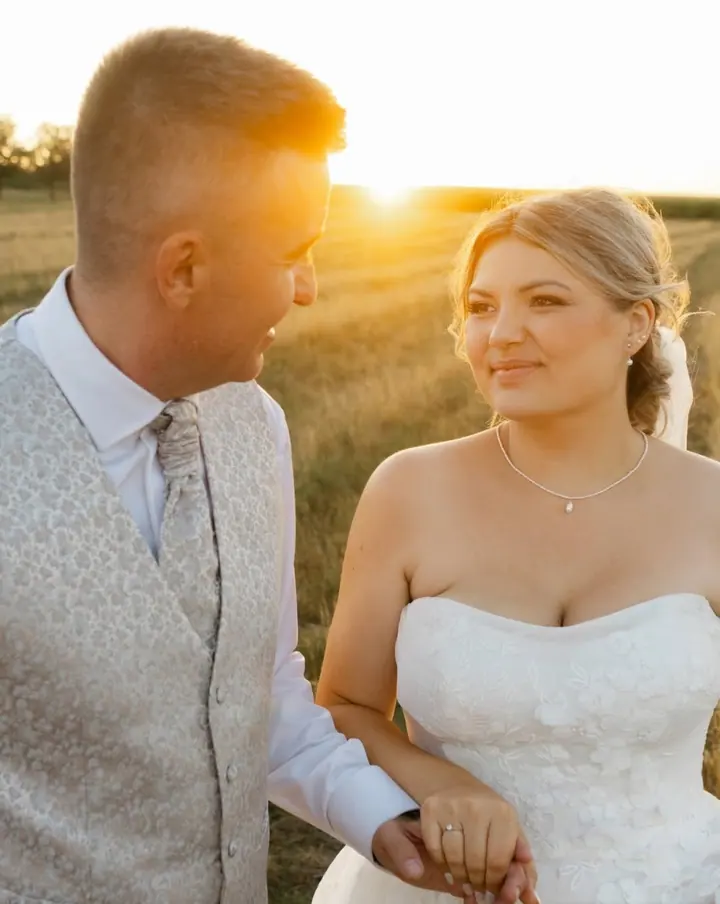
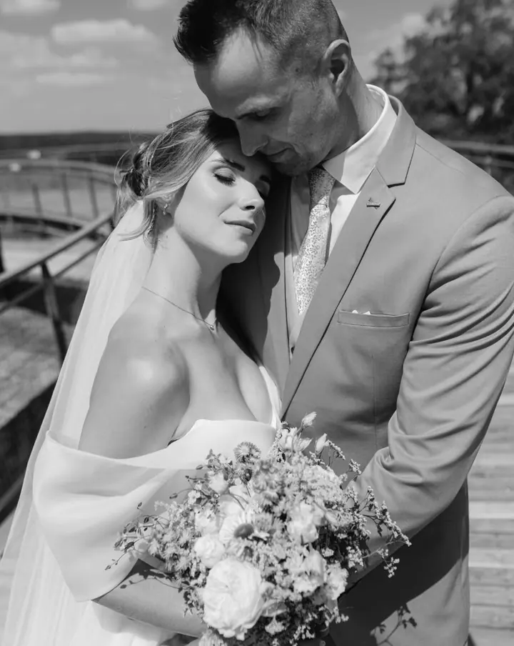
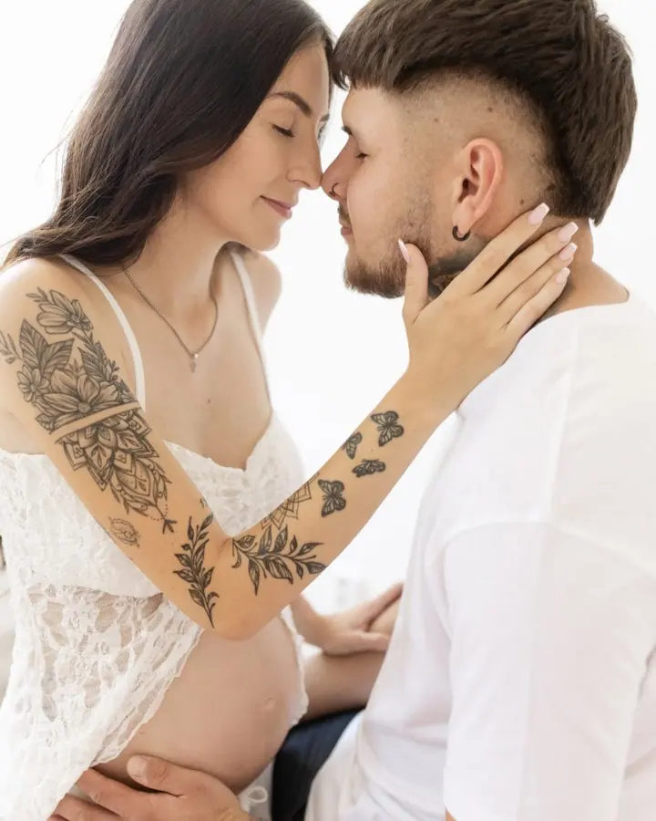
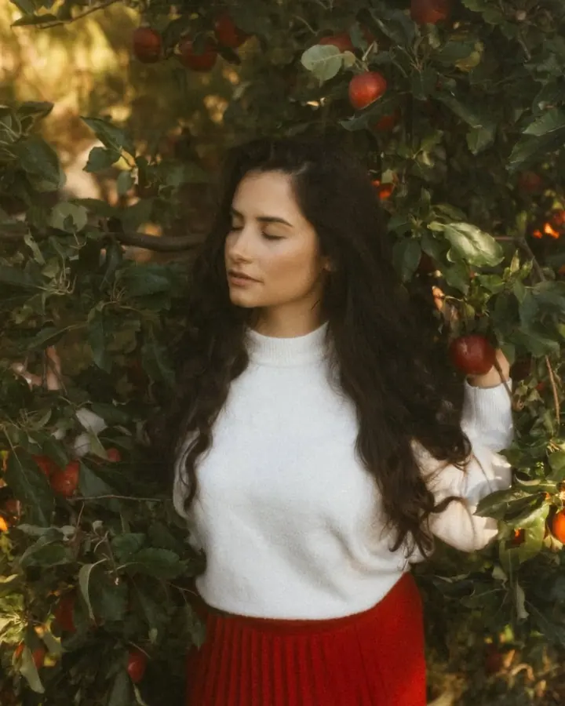

Svatby
Váš svatební den zachytím přirozeně, citlivě a s důrazem na emoce. Podle vašich představ si vyberete kratší focení obřadu a párových fotek, nebo celý den od příprav až po zábavu.

Jmenuji se Irena Blažková a jsem rodinná a svatební fotografka ze Znojma. Miluji přirozené momenty plné emocí, smích dětí, objetí mezi partnery a dojemné chvíle na svatb…
Rezervovat termínFocení se věnuji od roku 2017. Tehdy to byl jen koníček při studiu oboru, který s fotografií neměl vůbec nic společného: vystudovala jsem kosmetiku. Začínala jsem s focením kamarádek a známých, ale brzy se mi začali ozývat i další lidé, kteří chtěli zachytit své vzpomínky mým pohledem.


Dnes se specializuji na rodinné, lifestyle a svatební focení. Fotím venku v přírodě i ve městě, v ateliéru ve Znojmě a ráda také u vás doma, kde se cítíte nejlépe. Každé focení je jedinečné a zachytit váš příběh takový, jaký skutečně je, je pro mě to nejcennější.
Vím, že ne každý se před objektivem cítí uvolněně. Proto vás focením provedu tak, abyste si ho užili a odnesli si nejen krásné fotografie, ale i příjemnou vzpomínku. Největší radost mi dělá, když se ke mně vracíte.
Co fotím
Váš svatební den zachytím přirozeně, citlivě a s důrazem na emoce. Podle vašich představ si vyberete kratší focení obřadu a párových fotek, nebo celý den od příprav až po zábavu.
Fotíme venku v přírodě, ve městě nebo v ateliéru ve Znojmě, v uvolněné atmosféře, abyste se cítili přirozeně. Balíčky platí i pro portrétní a novorozenecké focení.
Zachytím váš příběh tam, kde se cítíte nejlépe, v prostředí vašeho každodenního života. Strávím s vámi několik hodin a nenápadně zdokumentuji chvíle s vašimi dětmi tak, jak je prožíváte.
Procházka ve dvou, objetí a smích, které k vám patří. Hodí se i jako předsvatební focení, na které od svatebních balíčků dostanete slevu.
Postup
Napište mi přes formulář nebo sociální sítě. U svateb doporučuji rezervaci klidně i rok dopředu, čím dříve, tím lépe.
Domluvíme místo a čas, poradím s oblečením. Se svatebními páry se potkám osobně a vše společně naplánujeme, rádi si můžete dát i předsvatební focení se slevou.
Fotíme venku, v ateliéru nebo u vás doma. Nemusíte umět pózovat, provedu vás tak, abyste se cítili přirozeně.
Náhledy dostanete do 2 až 3 dnů a vyberete si své fotky, u svateb vybírám já. Upravené snímky pošlu do 2 až 3 týdnů přes online galerii Pixin.
Otázky
Žádný stres! Focením vás provedu tak, abyste se cítili přirozeně a sami sebou.
Můžeme fotit venku, u vás doma nebo v ateliéru ve Znojmě. Místo a čas domluvíme společně.
Do ateliéru doporučuji přírodní barvy jako hnědá, béžová, pudrově růžová nebo bílá. Venku slaďte barvy do jemných tónů a vyhněte se velkým nápisům a výrazným vzorům. Když si nejste jistí, ráda poradím.
Náhledy dostanete do 2 až 3 dnů po focení, upravené fotografie do 2 až 3 týdnů od vašeho výběru. Dodávám pouze upravené snímky a ke každé galerii přidávám 10% slevu na tisk.
